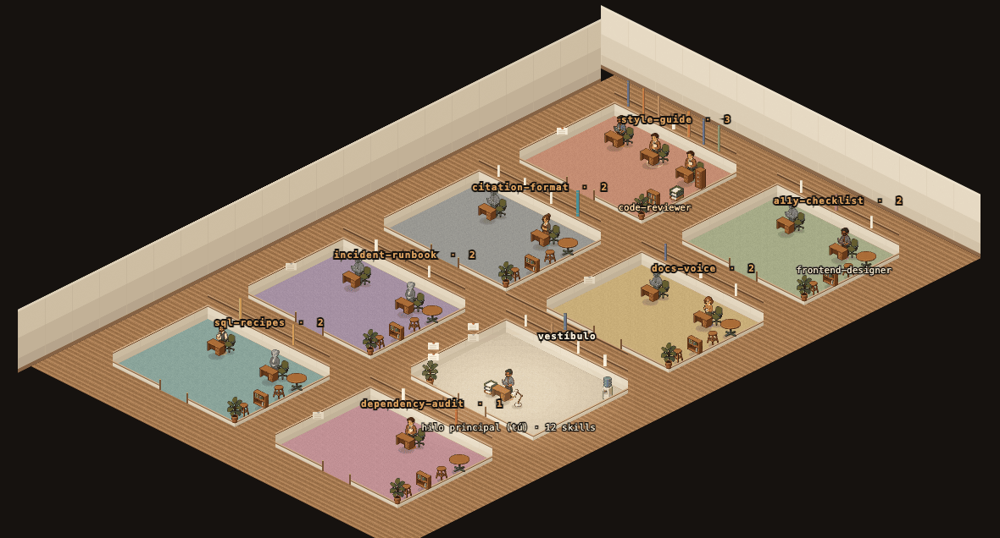
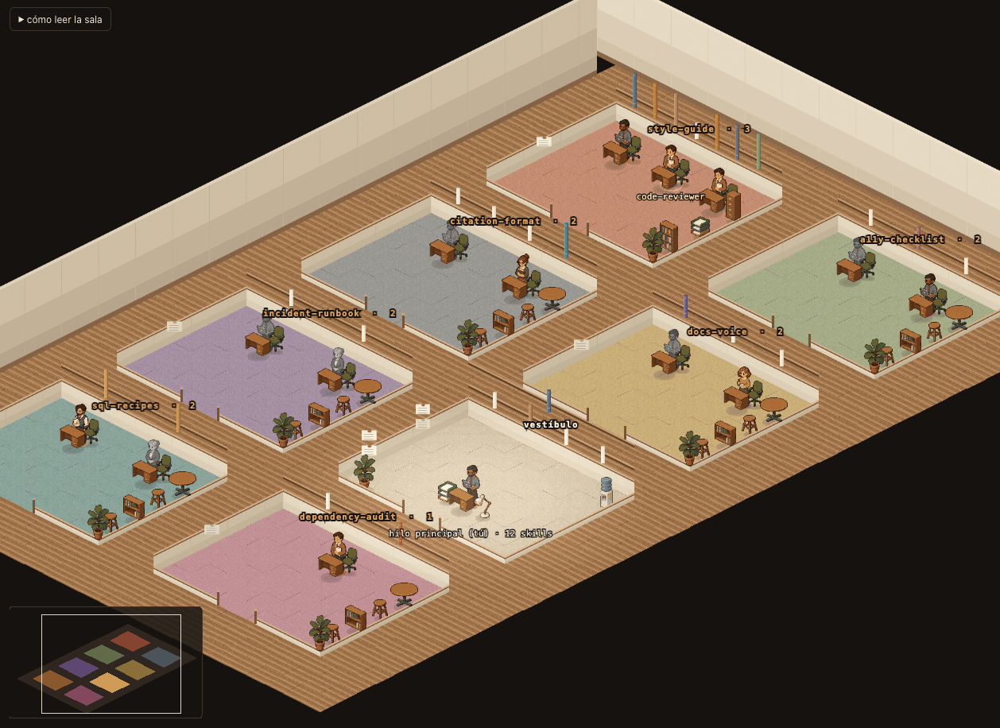
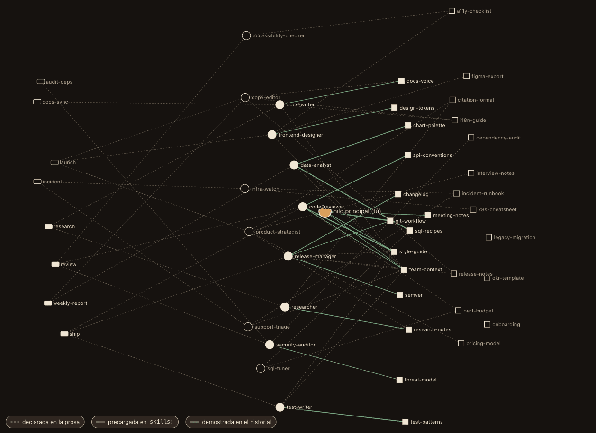
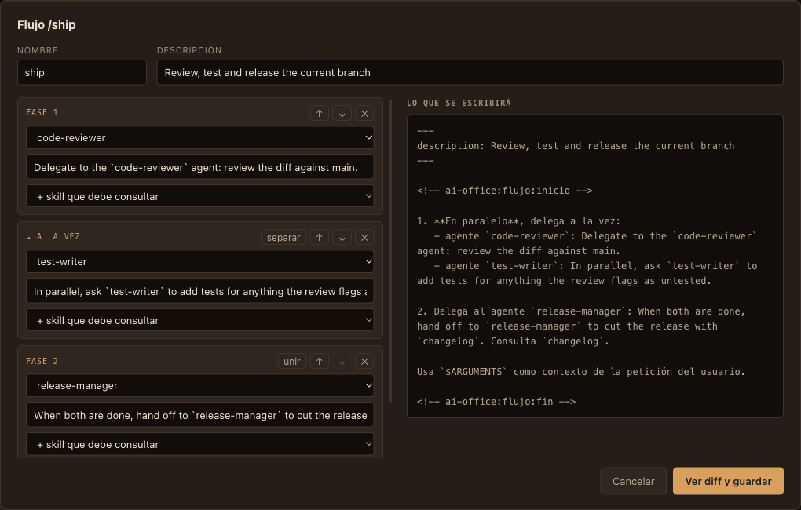

Which half of your Claude Code setup do you never use?
ai-office reads your agents, skills and slash commands, checks them against what actually happened in your sessions, and shows you both at once: the org chart you wrote, and the one that exists.
Free and open source (MIT). Runs on your machine, reads ~/.claude, sends nothing anywhere.

One command, the uncomfortable numbers
Run the census on your own installation. It takes a few seconds, even over gigabytes of transcripts.
$ ai-office censo
agentes 14 6 no han trabajado en los últimos 90 días
skills 28 14 sin usar en los últimos 90 días
comandos propios 8 4 ejecutados alguna vez
ratio activo 32%
Sube al usar lo que tienes o al jubilar lo que no usarás.
el grafo que ya escribiste, y el que existe
agente→skill citadas en su prompt 41 declaradas
agente→skill demostradas 13 en el historial- 6 of 14 agents did nothing in 90 days. You wrote their prompts. No session in the last 90 days delegated anything to them.
- Half the skills, never invoked. Their descriptions still load into every session and cost tokens.
- Active ratio: 32%. It goes up when you use what you have, or retire what you won't. Never by spending more.
- 41 promises, 13 proofs. Agents cite skills in their prompts. Transcripts show which citations turned into calls. That gap is the product.
The CLI and the interface speak Spanish today. The numbers above come from the demo installation that ships with the project.
The graph is already written, in prose
Agents tell themselves to “read the style-guide skill first”. Commands name the agents they call. None of that is a structured field, so no tool sees it. ai-office extracts it, with the file and line that justify each link, and lays it over what your transcripts prove.
- Available
- installed skills Anyone can invoke it, if the model decides to.
- Assigned
- prose in the agent's prompt Its prompt says so. Nobody guarantees it.
- Preloaded
-
skills:in the frontmatter Always loaded, whatever it costs. - Proven
- your transcripts It did it, N times, the last one on a given day. This layer wins: it is the only one backed by facts.
Two ways to look at the same office

The Office
A floor plan in isometric pixel art. Rooms are not invented themes: they come from which skills each agent cites and which commands call it, so every door carries the name of a real skill or command and tells you why those people share it.
Position is data. A grey figure has never been delegated. The height of a book spine is how established a skill is; a blank spine is a skill nobody has opened. The archive of skills that half the floor cites faces the storeroom of skills nobody claims.

The Blueprint
The graph with every layer at once. Dotted is what your prompts declare; solid is what your transcripts prove. Select anything and the side panel quotes the file and line behind each claim.
Press / to find any agent, skill or command, and ? for the legend and shortcuts.
Change it without fear
Everything you edit goes through the same door: the diff is shown before the disk is touched, a backup is kept, and a line lands in an audit log. Nothing is ever deleted.

- Draw a relation. Drag from an agent to a skill in the Blueprint and the citation is written into its prompt.
-
Retire a skill.
One click sets
disable-model-invocation. Reversible, and the fastest way to raise your active ratio. - Compose a slash command. Pick who takes part, in what order, consulting what. Steps in the same phase run in parallel, and the preview is the exact Markdown that will be written.
- Archive an agent. It moves aside, not to the bin, and comes back with one click.
Watch your agents clock in
With the hooks installed, the office comes alive while you work in another window: agents materialise when they are delegated and a skill's spine lights up when it is invoked. Unlike a session viewer, each of those events leaves a permanent mark on the records, so watching the work changes what things are.
Principles
Nothing leaves your machine
No server, no telemetry, no account, no network. It reads ~/.claude and a local daemon listens on 127.0.0.1 only, behind a token that changes on every start.
Every number cites its source
If a figure cannot say which file and field it comes from, it is not shown. We even document the metric we tried and threw away because the data did not back it.
No number improves by spending more
A skill's grade saturates: the 50th use is worth no more than the 3rd, and it expires after 90 days without use.
Install
Requires Node 22.16 or newer. Nothing is written to your configuration without showing you the diff first.
As a Claude Code plugin
Recommended. The hooks are declared by the plugin, so your settings.json is never touched. Adds the /censo command.
claude plugin marketplace add alex-roc/ai-office
claude plugin install ai-office@ai-officeFrom source
Clone it, run the census, open the office.
git clone https://github.com/alex-roc/ai-office
cd ai-office && pnpm install
pnpm censo # the numbers
pnpm dev # the office, in your browser
pnpm demo # a fictional office, safe to edit